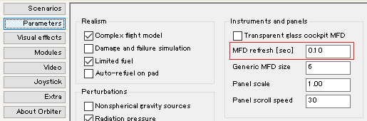

PursuitMFDのダウンロード+インストール
PursuitMFDは、宇宙船の姿勢制御、ドッキング、着陸を自動化・補助するMODです。
Orbiter2016とOrbiter2010の両方で使用できます。
ダウンロード
インストール
ダウンロードしたファイルを解凍して、中身をOrbiterフォルダに上書き。
LaunchpadのModulesタブをクリックして、PursuitMFDにチェックを入れる。※
※Orbiter2016ならPursuitMFD_2016、 Orbiter2010ならPursuitMFD_2010
Orbiter2010
Orbiter2010の場合は、解凍したフォルダの中の(orb2010)フォルダを開く。
中に入っているModulesフォルダをコピーして、Orbiterフォルダに上書きする。
MFD refresh rate
LaunchpadのParametersタブをクリック。
MFD refresh [sec]を0.1に設定する。※

※姿勢制御プログラムの挙動に影響する
ランタイム
起動しない場合は、Visual C++のランタイムを導入してください。
Microsoft Visual C++ 2010 Service Pack 1 再頒布可能パッケージ MFC のセキュリティ更新プログラム
このランタイムのインストール方法については、リンク先のページを参照してください。
注意
PursuitMFD使用中にタイムワープ（T / Rキー）を使うと、挙動が不安定になることがある。
オートパイロット使用中はタイムワープ100倍、エンジン噴射中はタイムワープ10倍に制限すること。